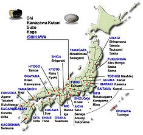
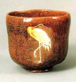

| Kanazawa, Japan
Welcome
to Japan. The site Japanese
Culture Seen in Kanazawa is a great site for anyone with
an interest in Japanese culture and holds a particular interest
those interested in ceramics with its pages on Japanese ceramics
and tea ceremony.
The introduction informs us of what lies ahead: "Cultural and
art forms in Japan are stylised and highly refined, emphasising
simplicity, elegance and grace; these include theatrical performances,
textiles, ceramic ware and 'the Way', which includes the tea ceremony.
Various pages offer three opportunities to branch off to 'What is
It?', 'The Beauty of It' and 'Let's Try It'. Let's have a look at
the ceramics and tea ceremony pages.
Clicking
on the Ceramic
ware button, we are presented with a luminescent ceramics
logo, which suggests the fire that transforms the clay. Below we
find a map of Japan, marked with the most important ceramics manufacturing
areas in the country. Further below, we are given the invitation
to a tour to the Refined
World of Ohi and the World
of Kutani.
Ohi
ware was developed for use in the tea ceremony. Made of
soft clay and fired at low temperatures, Ohi pieces are prized for
their beautiful shapes and luster. They were and still are made
by the Ohi Chozaemon master, whose lineage dates back to 1630.
Ohi
ware is made by hand without a wheel. The glaze effects are achieved
by taking the hot piece out of the kiln while the glaze is soft,
then cooling it rapidly. On the What
is It? page, one can view several beautiful pieces of Ohi
work made by the current master Ohi-Chozaemon Toshiro (b.1927).
The
Beauty of It page offers a selection of images of tea
bowls, water containers and ceremonial vessels by several Ohi masters.
Following the Kutani link to What
is It?, we find a detailed description of the history and
techniques of Kanazawa Kutani ware, while the Beauty
of It page leads to a gallery of Kutani pottery.
We now go back to the homepage and click on another section of
the Kanazawa site, simply titled The
Way. "Michi (literally 'the Way') is a term used to denote
the fundamental principle underlying a system of though or belief,
an art, or a skill...The basis of Michi, the Way, resides in posture
and body movement". This school of thought applies to Sado
(Way of Tea).
The
What
is It? page gives us a short description of the basics of
the Way of Tea and describes the typical tea ceremony room, manners
and utensils. We learn that the tea ceremony may have originated
as a way of settling feudal disputes and one entered the ceremony
room through a small entrance crawling on one's knees. This is thought
to instil humility in the participants or may have been a way of
making sure no swords were hidden under the robes. The Beauty
of It bids us to 'please enjoy the beauty of the tea ceremony'
and offers thumbnails of tea bowls, whisks, scoops, kettles and
more. Each image can be enlarged if wished.
The Kanazawa site is beautifully laid out and the images of Japanese
culture are intriguing and visually stunning. This is a great site
to learn something about Japanese culture and ceramics.
More Articles
|